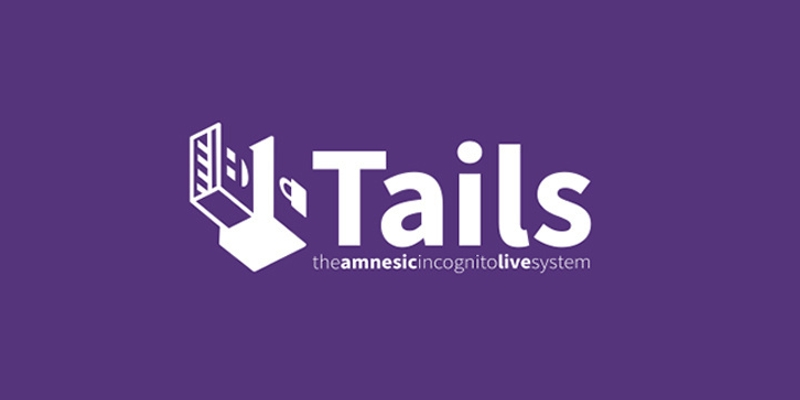

Tails
A Tails egy live USB rendszer: pendrive-ról indítod, és nem nyúl a gép merevlemezéhez. Leállításkor minden törlődik, nem marad nyom.
Minden kapcsolat a Toron megy, ami nem, azt a rendszer blokkolja.
Az a különlegessége, hogy bármelyik gépen használhatod, és utána semmi sem utal arra, hogy ott jártál.
A Tails telepítéséhez egy legalább 8 GB-os pendrive kell. Mivel leállításkor minden törlődik, a fájljaidat külön kell elmentened, vagy be kell kapcsolnod a titkosított Persistent Storage funkciót. Ha utazol, vagy idegen gépen dolgozol, ez a legjobb választás.